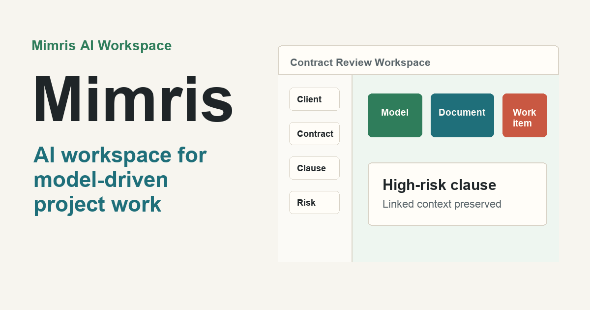

Mimris Modeling App
Open-source graphical modelling and metamodelling tool for creating custom domain-specific modelling languages and models.
Public demo GitHub repository Feedback issuePress kit
Keep AI-assisted project work connected to the domain model.
Use this page for directory submissions, newsletter pitches, community posts, and media references. It contains stable descriptions, public links, screenshots, and product facts for Mimris and Mimris AI Workspace.
Facts
Mimris is the public open-source modelling foundation. Mimris AI Workspace is the connected public demo for model-driven project execution; use the coffee-shop workspace as the primary proof path until its repository is public.
Open-source graphical modelling and metamodelling tool for creating custom domain-specific modelling languages and models.
Public demo GitHub repository Feedback issueStructured project workspace connecting domain concepts, documents, decisions, work items, and AI-assisted draft production.
Public demo Combined overview Feedback via Mimris issueMimris provides the graphical modelling and metamodelling foundation. Mimris AI Workspace extends that foundation into connected project execution.
Combined overviewHow it works
Mimris separates two jobs that belong together. The Modeling App makes the language of a domain explicit. Mimris AI Workspace uses that structure to organize the documents, decisions, and work that move a project forward.
Make the important actors, objects, processes, and relationships explicit instead of leaving them scattered through prose.
Link domain concepts to the documents, operational views, decisions, and work items that depend on them.
Use AI assistance inside a structured project environment, where drafts can be traced back to the model and reviewed by people.
Where it fits
Mimris is most useful when a project has specialized language, interconnected deliverables, and decisions that must survive beyond a single conversation.
Screenshots
Use the wide social card for link previews and the screenshots for newsletter, directory, or community submissions.



Reusable copy
Keep AI-assisted project work connected to the domain model.
Mimris links concepts, documents, decisions, work items, and implementation context so AI-assisted project work survives beyond individual chats and diagrams.
Mimris is built around a practical problem in AI-assisted work: tools can generate useful fragments, but serious projects need durable structure. The clearest public proof path today is a coffee-shop workspace where operational concepts such as Order Entry, Payment Checkout, Production Routing, and Inventory Ops remain linked to domain documents and work items as the model evolves.
Mimris is an open-source graphical modelling and metamodelling foundation for defining domain-specific languages. Mimris AI Workspace applies those models to project execution by connecting domain descriptions, functional views, documents, decisions, work items, and AI-assisted drafts.
Generative AI is good at producing fragments. Project teams still need a durable system for shared meaning: what concepts matter, how they relate, which artifacts depend on them, and what changed over time.
Mimris does not stop at drawing the diagram; it carries the domain model into the documents and work that deliver the project.